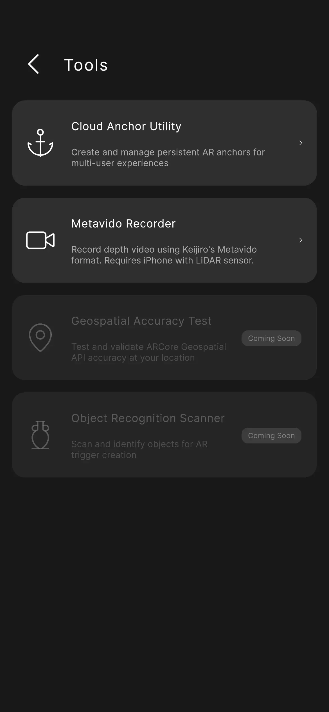
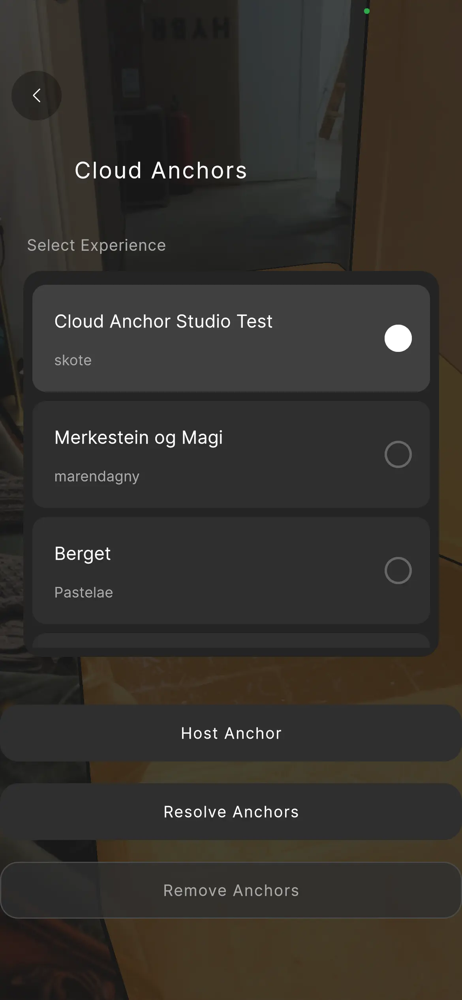
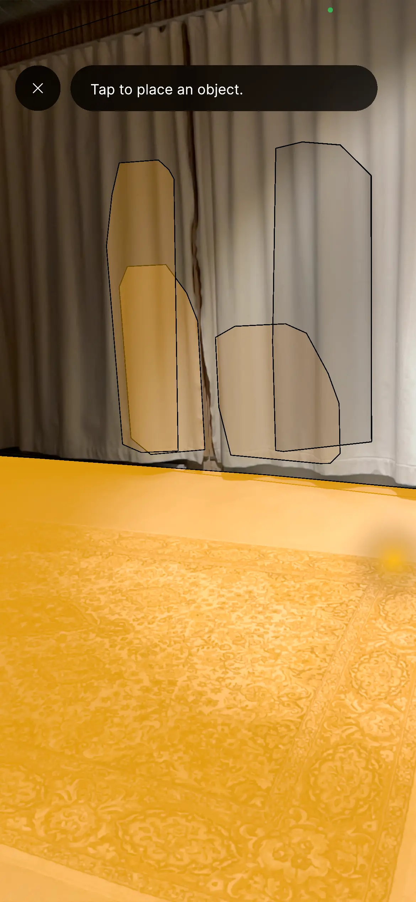
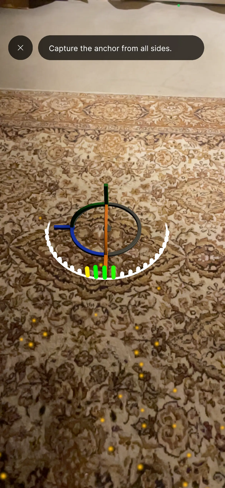
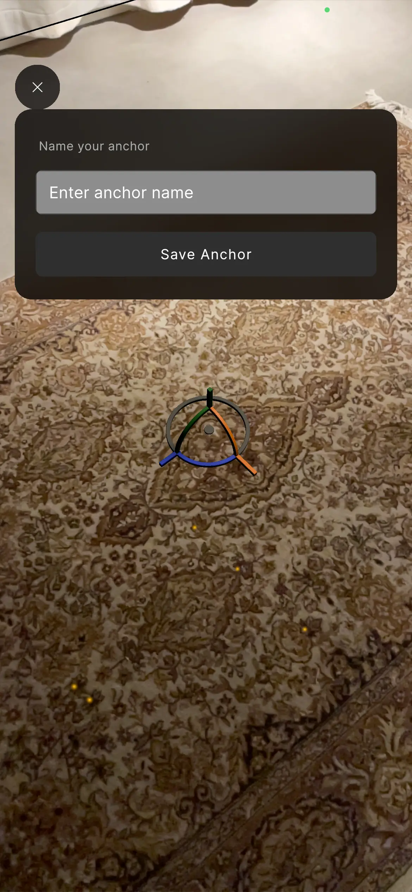
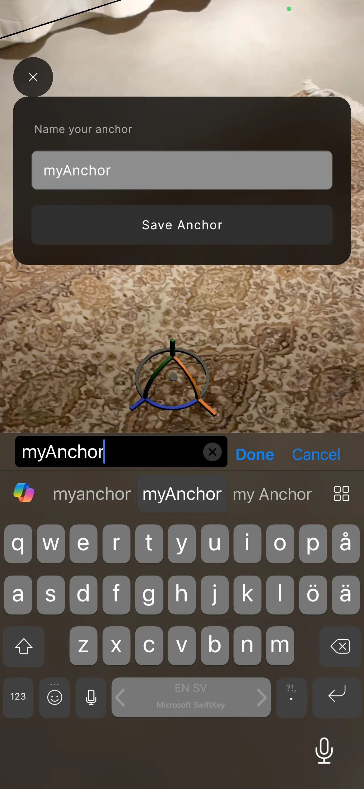
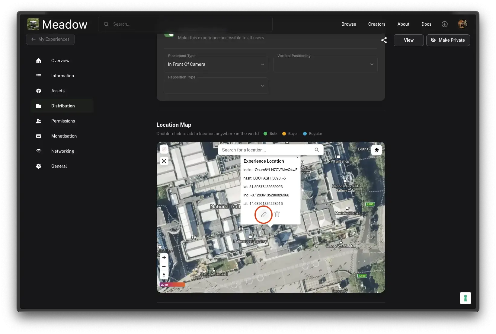
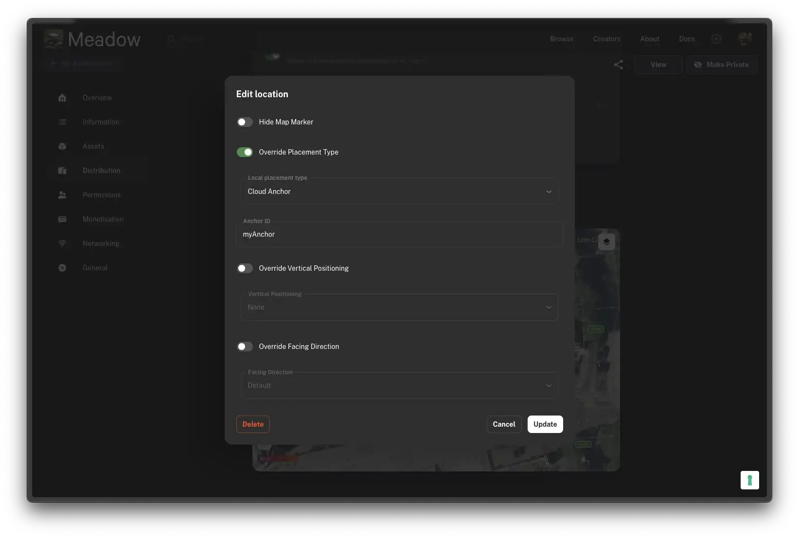
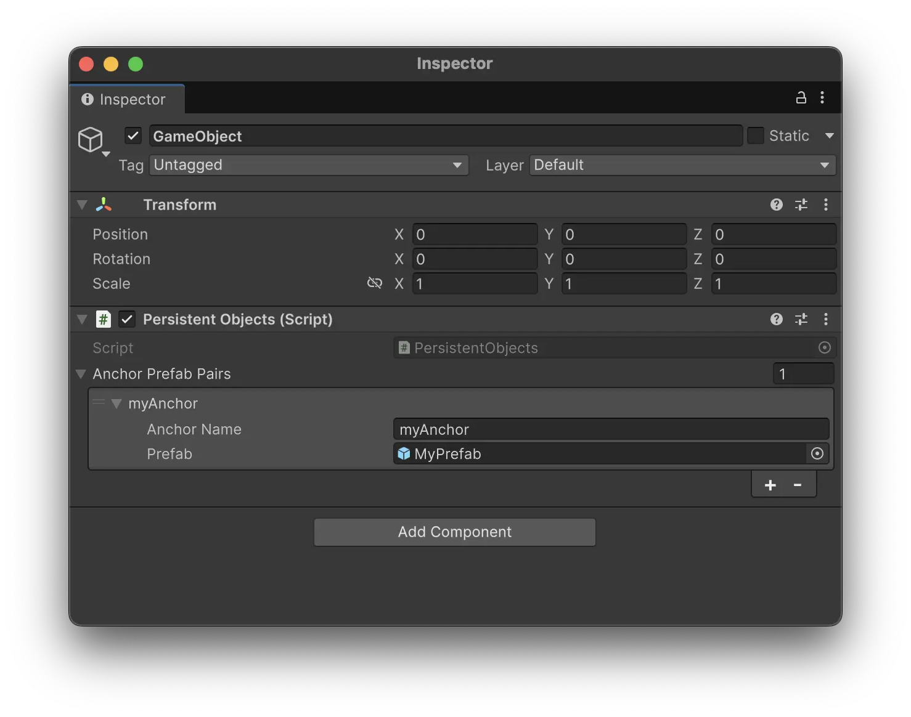

Cloud Anchors
Cloud Anchors allow you to place experiences at precise real-world locations that persist across sessions and devices. Using Google’s ARCore Cloud Anchors, your experience will appear in the exact same position for all users who visit the location.
Note: Cloud Anchor creation is a PRO feature. Upgrade to PRO to create and use Cloud Anchors in your experiences.
Use Cases
There are two ways to use Cloud Anchors in Meadow:
- Cloud Anchor Location - Position your entire experience at a precise real-world location
- Persistent Objects - Anchor specific objects within your experience to real-world positions
Cloud Anchor Location
Use this when you want your experience to appear at an exact position in the real world - for example, placing a virtual sculpture in a specific corner of a gallery, or positioning an interactive installation at a precise spot in a venue.
Tip: For outdoor experiences, consider using the Geospatial placement type instead, as it is more robust in open environments.
Step 1: Place Your Experience on the Map
First, you need to place your experience at the general location where you want it to appear.
- Go to the Meadow Web App and open your experience
- In the Distribution section, search for your location and place the experience on the map
- Save the experience
Step 2: Create the Cloud Anchor On-Site
You need to physically go to the location to scan the environment and create the anchor.
- Open the Meadow app on your device
- Go to Profile > Settings > Tools > Cloud Anchor
- Select your experience from the list
- You’ll enter AR.


Step 3: Scan the Environment
- Look around, and press the position where you want to place your experience.
- You will see an anchor appear.
- Move around the space to scan your surroundings thoroughly:
- Include as much of the surrounding environment as possible
- Scan walls, floors, furniture, and distinctive features
- Move slowly and steadily
- Cover multiple angles of the space


Note: There is currently no indicator showing scan progress or time remaining. Continue scanning until the app prompts you to save.
Step 4: Save the Anchor
When scanning is complete, you’ll be prompted to save the anchor.
- Enter a memorable name for the anchor (you’ll need this later)
- Press Save (there is currently no confirmation message, but the anchor will be saved in the background.)


Tip: For scanning several cloud anchors, its safest to leave the tool and re-enter for each anchor.
Step 5: Configure the Location in Web App
Finally, connect the anchor to your experience location:
- Return to the Meadow Web App
- Open your experience and go to the Distribution section
- Click the Edit button on your placed location

- Set Placement Type to Cloud Anchor
- In the Cloud Anchor Name field, enter the exact name you gave the anchor
- Save the experience

Your experience will now appear at the precise position where you created the anchor for all users who visit that location.
Persistent Objects
Use the Persistent Objects component when you want to anchor specific GameObjects within your experience to real-world positions.
Setup
- Add the PersistentObjects component to a GameObject in your scene
- Configure the list of anchor-prefab pairs:
- Anchor Name: The identifier for this anchor point
- Prefab: The GameObject to instantiate at this anchor
- Use the process described in the Cloud Anchor Location section to create anchors on-site and save them with the corresponding names.

When the experience loads, any saved anchors will be resolved and the corresponding prefabs will be instantiated at their stored positions.
Best Practices
Ideal Environments
Cloud Anchors work best in:
- Indoor locations with stable features
- Spaces that don’t change often - avoid areas where furniture is frequently rearranged
- Well-lit environments with consistent lighting
Outdoor Considerations
Outdoor Cloud Anchors can work but are more challenging:
- Scan in overcast weather for best results
- Avoid stark shadows - these change with the sun and can break anchor recognition
- Natural environments with vegetation may be less reliable as plants grow and change
What Can Break an Anchor
- Moving furniture or objects that were part of the scan
- Significant lighting changes
- Renovations or redecorations
- Seasonal changes (for outdoor anchors)
Tip: If an anchor stops working reliably, you can create a new one by repeating the scanning process at the location.
Known Issues
Private experiences opened from Profile view may use incorrect placement
When opening a private (unpublished) experience from your Profile that uses Cloud Anchor placement, the experience may occasionally load with “In Front of Camera” placement instead of the Cloud Anchor position.
Why this happens: Private experiences load their location data slightly later than public experiences. If you open the experience before the location data has loaded, the app defaults to direct placement.
Workarounds:
- Open the experience from the Map view instead of the Profile view
- Wait a few seconds after the app loads before opening the experience from Profile
- If this is a problem for your use case, disable “Available Everywhere” in the experience settings - this ensures the experience can only be opened when the user is at the Cloud Anchor location